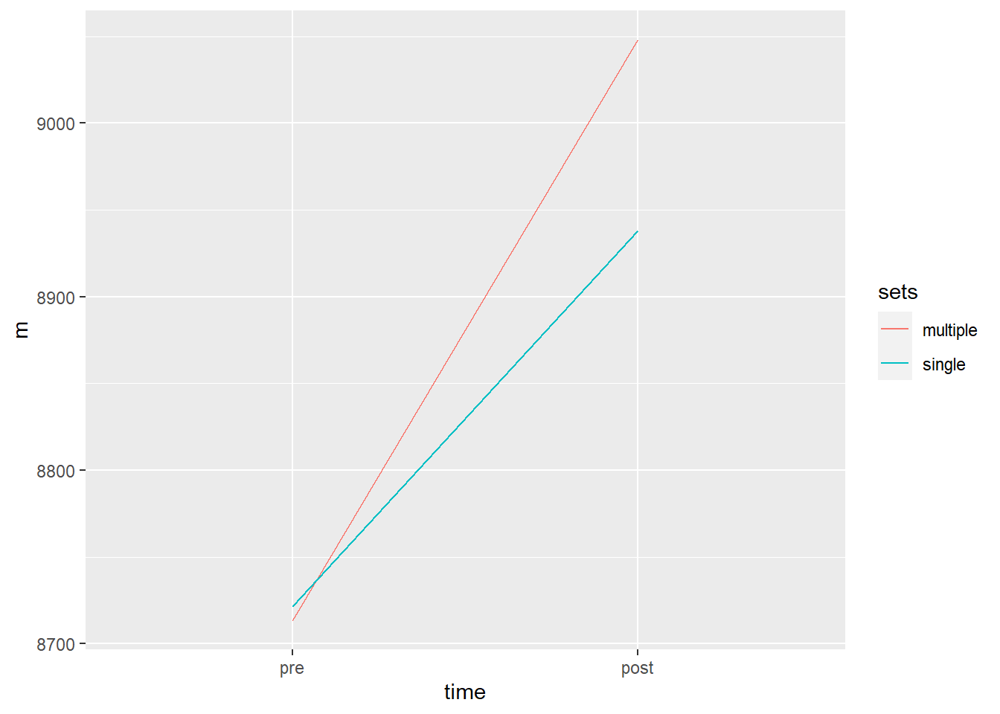

#### GRAPHS
library(exscidata)
data("dxadata"); data("strengthvolume")
library(tidyverse)── Attaching packages ─────────────────────────────────────── tidyverse 1.3.2 ──
✔ ggplot2 3.3.6 ✔ purrr 0.3.4
✔ tibble 3.1.8 ✔ dplyr 1.0.10
✔ tidyr 1.2.0 ✔ stringr 1.4.1
✔ readr 2.1.2 ✔ forcats 0.5.2
── Conflicts ────────────────────────────────────────── tidyverse_conflicts() ──
✖ dplyr::filter() masks stats::filter()
✖ dplyr::lag() masks stats::lag()library(tidyverse)
dxadata %>%
select(participant:include, lean.left_leg, lean.right_leg) %>%
pivot_longer(names_to = "leg",
values_to = "lean.mass",
cols = lean.left_leg:lean.right_leg) %>%
mutate(leg = if_else(leg == "lean.left_leg", "L", "R"),
sets = if_else(multiple == leg, "multiple", "single")) %>%
select(participant, time, sex, include, sets, leg, lean.mass) %>%
filter(time %in% c("pre", "post")) %>%
group_by(time, sets) %>%
summarise(m = mean(lean.mass)) %>%
mutate(time = factor(time, levels = c("pre", "post"))) %>%
ggplot(aes(time, m, color = sets,
group = sets)) + geom_line()`summarise()` has grouped output by 'time'. You can override using the
`.groups` argument.